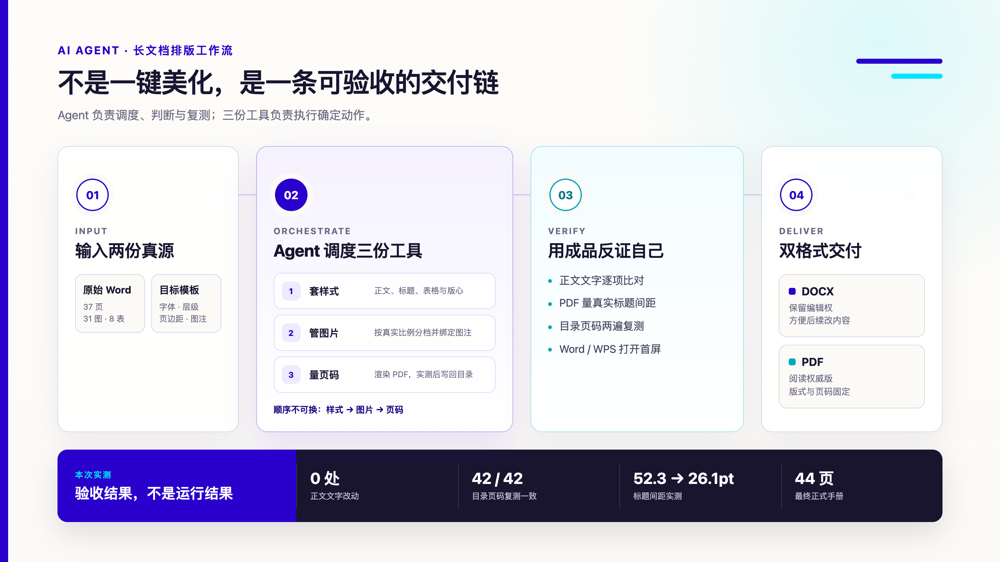
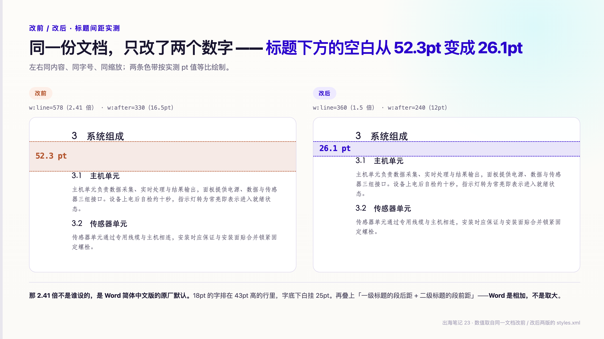

序言：我把一份 37 页的 Word 交给了 Agent
上周，一份技术手册到我手里：三十七页，三十一张图，八张表，四十二条目录。
任务听起来很简单：正文一个字不动，把它排成公司的样子，同时交付 docx 和 PDF。
我把这件事交给了 AI Agent。原稿和公司模板都给它，要求也写得很清楚：标题、正文、图注、表格全部套模板；图片不能撑破页面；目录页码要对；最后还要证明文字没有被改过。
我以为这是个下午的活。
结果第一轮花了两天。最后的成品是四十四页，文字比对零改动，排版过程被收进三份脚本和一份执行说明里。
这两天暴露出来的，不是 AI 会不会操作 Word。真正的问题是：一份几十页的文档，到底要改哪些东西，又凭什么说它已经改对了。
一、长篇 Word 里，不止一种「格式」
我原来把格式理解成字体、字号、行距。拆开这份手册之后，才发现一份 Word 至少同时有四种状态。
第一层是样式状态。 样式表规定「这一类段落长什么样」，段落自己还可能带着一套直接格式，规定「这一个段落长什么样」。两套规则撞在一起，直接格式通常压过样式表。
第二层是对象状态。 图片、表格、图注不是跟着正文一起缩放的。页面左右边距一改，版心变窄，表格宽度也得跟着重算；三十一张图如果全部设成同一个宽度，横图浪费版心，竖图直接把下一段顶到下一页。
第三层是字段状态。 目录和页码看起来是文字，实际上可能是会更新的「域」（Field）。在这台机器上有内容，换一个软件打开，可能只剩一块空白。
第四层是渲染状态。 同一个 docx，在 Word、WPS、Pages 和 PDF 里，不一定是同一张脸。代码检查全过，不代表收件人打开时看到的也对。
所以 Agent 接到的不是一个「美化 Word」任务。它实际在做的是：把一份文档从原来的四种状态，迁移到另一套确定的状态。
格式不是一层皮。它是一组同时生效、还会互相牵动的规则。
二、Agent 跑的不是一个按钮，是一条流水线
最后跑通的流程分三段。
1. 先读文档，再决定从哪里下手
Agent 先读取公司模板里的真实样式值，再扫描目标文档：正文从哪一段开始、正文主字号是什么、有几个分节、多少张表、每张图片的真实宽高比是多少。
这一步不能省。直接对着整份文件刷格式，很容易把封面、目录和表格一起刷成 1.5 倍行距；只改页面边距，不重算表格宽度，又会让半本手册的表格溢出版心。
2. 三份脚本，各管一件确定的事
第一份脚本负责套样式：把模板里的正文、标题、图注和页面设置刷进目标文档，同时处理段落直接格式，并按照新版心重算表格宽度。
第二份脚本负责管图片：先读每张图的真实比例，再分成宽图、方图和竖图三档。宽图尽量吃满版心，竖图优先限高，图片和图注绑定在同一页。
第三份脚本最后才跑，负责量目录页码：先把 Word 渲染成 PDF，在成品里找到每个标题真正落在哪一页，把页码写回静态目录，再导出一次复测。
顺序不能换。样式和图片尺寸只要再动一次，前面量过的页码就全部作废。
3. 验收看的不是代码，是成品
最后一关不是问 Agent「你改好了吗」，而是让它交证据：正文文字逐项比对，目录页码逐条复测，PDF 里量真实间距，再到 Word 或 WPS 里看第一屏。
脚本只是手。Agent 真正接管的是前后的判断：该读哪份模板、三份工具按什么顺序跑、报告里哪些数字异常、哪一步失败了要回去重做。
「我改了」不能证明「它变了」——只有成品能。

三、三个最反直觉的坑
1. 样式改了，文档可以纹丝不动
Word 里，一个段落的行距可以同时来自样式表和段落自己。
我第一轮只改了样式表，导出来没有任何变化。因为生成这份文档时，每个标题段落自己身上已经带着行距设定，样式表里写什么，它都不看。
有点像 CSS 里的行内样式压过类选择器。（只是比喻——Word 的层叠规则更复杂，但「只改外层，内层不动」的结果是一样的。）
最后只能两层一起改，再把 PDF 渲染出来，取两个文字块的坐标差直接量：标题间距从 52.3pt 降到 26.1pt，才算真的改完。
2. 一块 1.8 厘米的空白，来自几个默认值叠加
标题下面那一大块白，我一开始以为是哪一步设错了。
后来拆开模板才看到，这份文件的一级标题还继承着 Word 中文标题样式里的 2.41 倍行距。18pt 的字，排在约 43pt 高的行里。
再往下还有一层：一级标题的段后距，和二级标题的段前距，在这里是相加，不是取大。几个单独看起来都不离谱的默认值叠在一起，实测留下 52.3pt、接近 1.8 厘米的空白。
很多外贸文件不是从白纸开始写的，是从客户、供应商或工程师的旧文档上继续改。你接手的也不只是一份内容——还有前一个人没说出口的默认值。

3. 目录在我这里正常，在 WPS 里整块空白
Word 的自动目录是一个「域」——一段需要软件刷新后才显示的动态内容。
这份文件在 Word 里打开，标题和页码都在；同一个文件换到 WPS，目录整块是空的。而正式交付的文件，很可能就在另一台机器、另一个软件里被第一次打开。
我的处理是把目录静态化：标题和页码直接写成文字，内部链接保留。代价是页码不能估，只能从最终成品里实测。
第一轮只改一级标题间距，四十二条目录一条没变。我差点因此判断「调标题不影响分页」。第二轮把二三级标题一起改，整份文档从四十五页掉到四十四页，四十二条目录里有三十一条要重写。
所以页码脚本要跑两遍：第一次量完写回，重新渲染；第二次再量，逐条一致才结束。
打开第一眼才会出现的缺陷，只能真的打开去验。
四、什么值得交给 Agent
这次之后，我不再用「难不难」判断一件事要不要自动化。我看四件事：它会不会重复，规则稳不稳定，结果能不能测，人做漏一次会牵连多大范围。
套几十页样式、重算表格、给三十一张图分档、回填四十二条页码——这些动作重复、规则明确、还能验，适合交给 Agent。
这一页看着有点挤、封面想往上挪一点、某个字号想再小半号——这些判断主观、例外多，人打开 Word 两分钟就能改完，没必要让整条脚本重跑一遍。
更准确的分工不是「机器管结构，人管观感」，而是：Agent 管重复的结构和可测的验收，人保留视觉判断与例外处理。
这套方法最适合说明书、标书、项目书这类长文档。它们的共同点不是页数多，而是内容会换、模板相对稳定，一处格式改动又可能牵连后面几十页。相反，如果一份文件只做一次、每一页都要单独设计，先别急着给它造一套自动化。
第一份手册花了两天，这不能直接叫提效。第一次是在做工具，第二次复用时才开始摊薄成本。
尾声：把一次排版，留成下一次的起点
那份三十七页的原稿，最后变成四十四页的正式手册。
内容没有改，变化的是它背后的规则：标题从哪里取值，图片怎么适应版心，目录如何落成静态页码，最后由什么证据证明交付没有坏。
我把这套流程整理成了一个可以拷走的工具包：一份空白模板 + 三份脚本 + 一份使用说明。空白模板里只有样式，没有我们公司的页眉、页脚、logo 和地址；把脚本指向自己的模板，刷出来的就是自己的格式。
它也不绑定某一个 AI 产品。只要 Agent 具备本地文件读写和脚本执行能力，就可以读取规范、调用工具、核对结果。
需要的朋友，公众号后台私信我「Word」，我把整包发你。
出海笔记，记录一家中国海洋仪器公司出海路上的实操与反思。